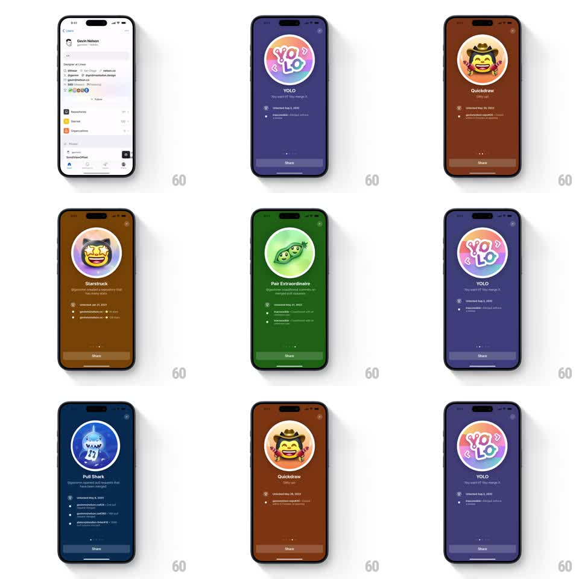

Media
Frame-by-frame

Rebuild this interaction 1:1: GitHub mobile's badge showcase - swiping horizontally pages through gamified profile badges (YOLO, Quickdraw, Starstruck, Pair Extraordinaire, Pull Shark), each on a full-bleed colored background that crossfades per badge, with the badge artwork tilting in 3D during the swipe.

Rebuild this interaction 1:1: GitHub mobile's badge showcase - swiping horizontally pages through gamified profile badges (YOLO, Quickdraw, Starstruck, Pair Extraordinaire, Pull Shark), each on a full-bleed colored background that crossfades per badge, with the badge artwork tilting in 3D during the swipe. ## Integration Integration: stack-agnostic spec - springs given as stiffness/damping, timed motions as duration + curve; map every value to your framework and animation library of choice. ## Scene Full-screen badge detail pushed from the GitHub profile (Gavin Nelson). Per badge page: large circular badge artwork center-top, badge name (YOLO, Quickdraw...), tagline, "Unlocked <date>" line with detail bullets, pager dots, translucent "Share" bar at bottom, close button top-right. Backgrounds: YOLO purple, Quickdraw burnt orange, Starstruck brown, Pair Extraordinaire green, Pull Shark deep blue. ## Motion spec Pattern: swipe pager with background color crossfade and 3D card tilt. - Horizontal drag pages the carousel; artwork, title, and detail block translate with the finger (1:1), the next page's artwork parallaxes slightly slower (0.85x). - The full-screen background crossfades between badge colors driven by drag progress (color lerp tied to page offset), not on snap. - During drag the badge artwork tilts in 3D: rotateY up to +-12deg toward the drag direction with a subtle perspective (600pt) and a 2deg rotateZ lag; on release it eases back to flat (spring ~260/20). - Release: pager snaps to the nearest page (spring ~300/22); pager dot advances with a scale pulse (1 -> 1.3 -> 1, 200ms). - The Share bar and close button stay fixed; only artwork + text + background move. ## Calibration - Background color is identity - never let two badges share a hue mid-transition without blending. - The 3D tilt follows drag velocity: flick = brief tilt, slow drag = held tilt. ## Reduced motion Pages crossfade without tilt or parallax; background color still crossfades. ## Don't miss - The badge art is glossy 3D-rendered - preserve its highlight through rotation (fake with a static sheen layer). - "Unlocked" details differ per badge; they slide with the text block, not independently.